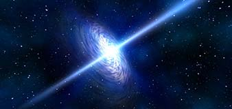

Space Graphics Toolkit
Space Graphics Toolkit is a huge collection of space effects can be customized and combined in any way you like, allowing you to quickly make realistic or fantasy worlds. Each feature has been heavily optimized to run on almost any device and platform.
AtmosphereThis feature allows you to add a volumetric haze around your planets. You have full control over the atmosphere color, sunset color, atmospheric scattering, fog, and much more. You can create any kind of atmosphere you like with this. |
 |